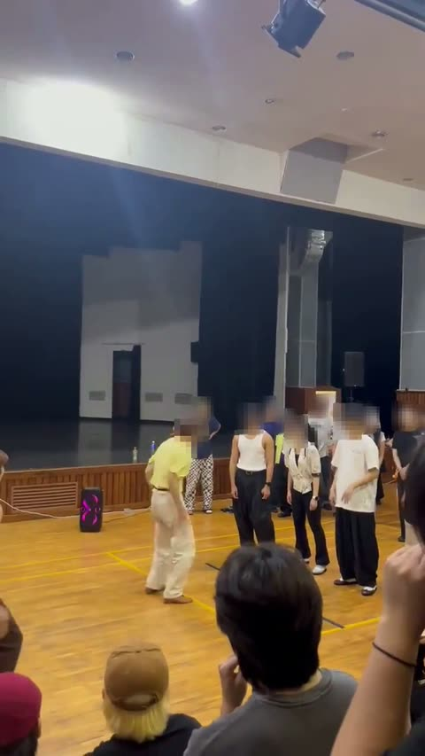
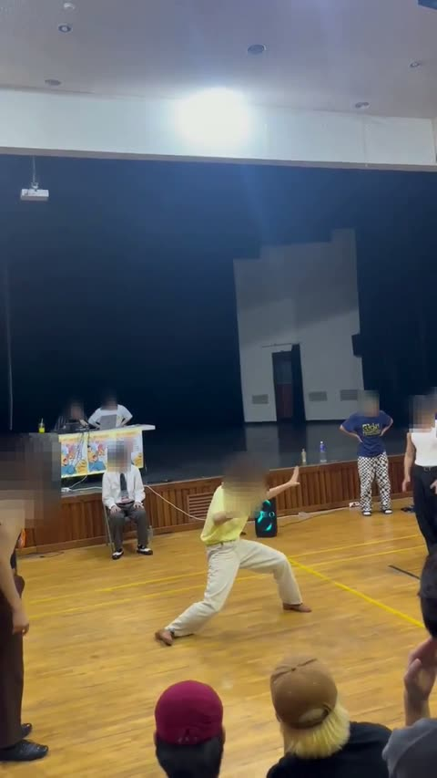
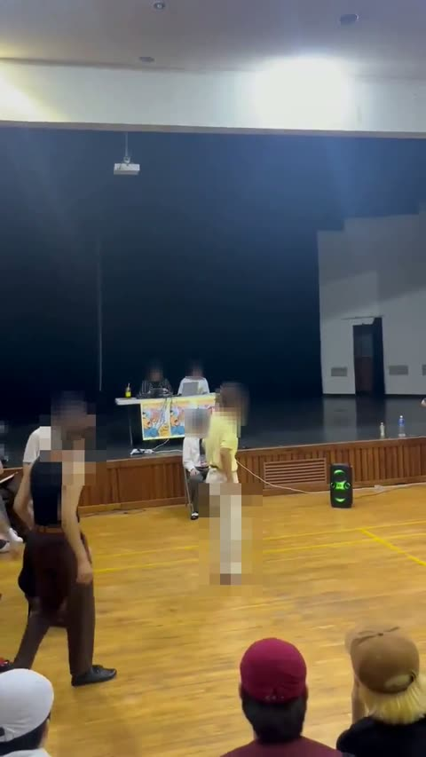
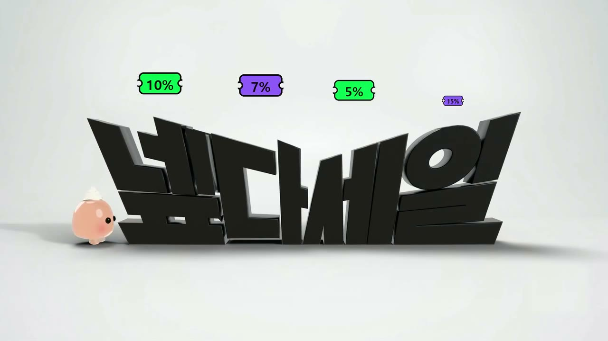
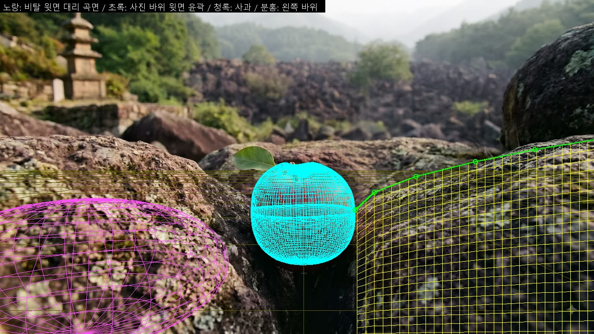

송호현 — AI 창작 작업
AI는 재료를 만들고, 사람은 타이밍과 감정을 판정합니다.
몸으로 쓴 악보
춤 영상을 초 단위로 분석해, 그 춤에 맞는 곡을 만듭니다.
- 분석동작이 커지고·멈추고·힘이 들어가는 순간을 시간표로
- 바탕 곡생성 AI(Stable Audio)로 분위기·템포에 맞는 곡의 몸체
- 타격강조 순간에 타격음을 직접 배치(FL Studio)
- 판정사람이 듣고 어긋난 곳을 고침
결과



소리를 켜고 보세요. 얼굴은 모자이크 처리했습니다.
쪼리
2cm 젤리 푸딩 캐릭터. 말로 지시하면 AI가 Blender를 코드로 조작해 연기와 장면을 만듭니다.
- 지시횟수·방향·순서를 말로 정함
- 연기AI가 점프·착지·눌림을 계산해 Blender에서 움직임 구성
- 장면가까운 물체는 3D, 먼 배경은 생성 이미지·사진
- 판정미끄러짐·공중부양은 자동 검사, 표정·이야기는 사람이 확인
넾다세일 AI 광고제 출품작 (25초)

쪼리와 글자는 Blender, 번개 무대와 선물은 생성 AI. 전체 영상: 인스타그램
Blender 작업 화면

송호현 · 쪼리 인스타 @hi_jjori